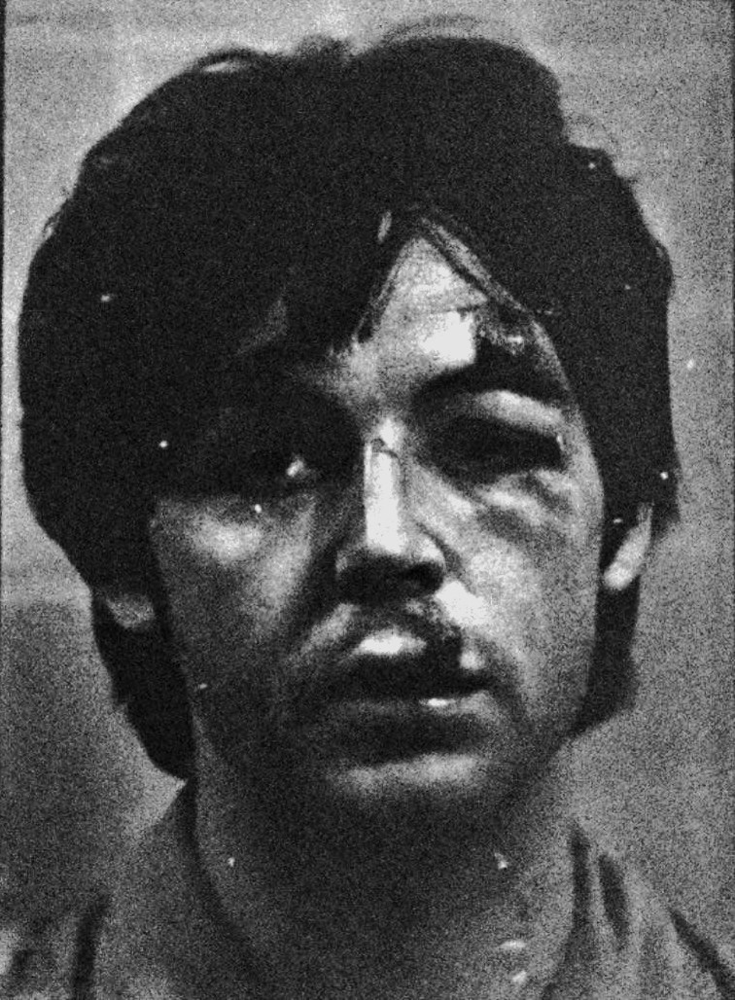

Is Paul Dead 💀
A lot of pop culture from the 1960s is basically forgotten in this day and age, but that doesn’t mean nothing interesting happened during that time. There was plenty of fun and music and mystery that deserves its resurgence into the spotlight. One such mystery is the “Paul is Dead” theory.The Beatles are a very well known and popular band, a band that I’ve dedicated much of my personal time to. One of my favorite pieces of their vast history is this theory.
A theory where people believed that Paul McCartney died in a car crash in 1967 and was replaced by a lookalike. It is believed that he was promptly replaced with a man named William Campbell. Most people believe that the name William Campbell is a reference to “Billy Shears” from the opening to
"With a Little Help from my Friends".
This man was an exact look-alike to Paul, and he even sounded and talked the same way McCartney did. This theory have caught on because of the public knowledge that Beatles look-alikes would be sent out of hotels in order to distract fans from the band’s real exit.
If they could find a whole group of good enough look-alikes, who’s to say they wouldn’t be able to find a perfect match for McCartney? While the theory has been debunked, it’s still fun to imagine a world where McCartney actually was replaced and his doppelganger still roams the Earth undetected today.